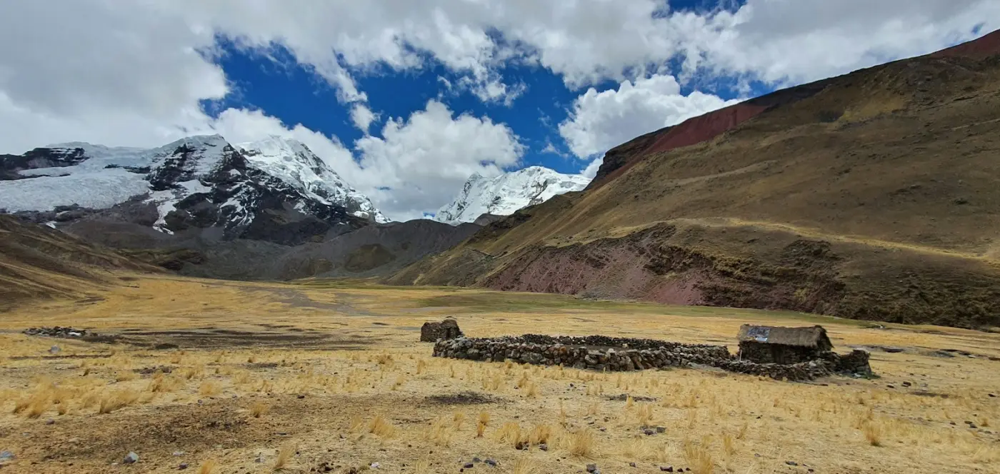

Q’ero · Andean · Inca tradition
Shamanic healing in Sydney
One-to-one Q’ero and Andean sessions with Vanessa, in person in Sydney or online.

Shamanic practice in the Andes
Shamanic work in the Q’ero tradition comes from the Andes of Peru. It is a practice built on relationship: with nature, the elements, the Apus (sacred mountain spirits) and Pachamama, Mother Earth. A well-known example is the despacho, an offering of flowers, grains and other gifts prepared for Pachamama in thanks and reciprocity, or Ayni.
Vanessa “Yana Kuntur” Black Condor is a Sydney-based practitioner of Inca medicine and Q’ero-inspired energy work. She has seven years of training and experience in South American ancestral medicines, including six years of study with the Apaza family at the Inca Medicine School in Cusco, Peru. She is a co-founder of the Paco Shaman Association, registered in 2022, and is certified by the Waira Qeros Peruvian Paco Shaman Association. Her work draws on nature, the elements and the Andean animals Amaru (serpent), Otorongo (jaguar) and Kuntur (condor).

Three ways to begin
Personal consultation
A one-to-one conversation to talk through what you are looking for, ask questions and explore which offering may be a good fit. If you are new to this kind of work, it is a gentle place to start.
Spiritual counselling and life coaching
A one-hour, one-to-one session for personal reflection, spiritual support and life coaching. Expect a warm, unhurried conversation in which you set the focus.
Chumpi chakra realignment
Chumpi stones are carved stones used in Andean energy work. This individual session is a traditional energetic practice inspired by Q’ero teachings and the elements of Earth, Water, Fire and Air. Please ask about the details in a consultation first.
What to expect
Each session is calm and private. You will have time to talk about what brings you, to ask questions, and to say what feels right for you. You can ask questions at any point. There is no need to know anything about Andean spirituality beforehand.
Who it suits
These sessions suit people who are curious about Andean and Q’ero traditions, want a quiet space for reflection, or would like to explore ceremony with a trained guide. People from all backgrounds are welcome.
Sessions run in person in Sydney or online. All listed services and prices on the booking page are for online sessions, so book a consultation to discuss in-person options.
Frequently asked questions
What is a Q’ero shamanic session?
It is a one-to-one session inspired by the Andean traditions of the Q’ero people of Peru. Depending on the service you choose, it may involve conversation, reflection and energetic practices connected to nature and the elements.
Do I need any experience?
No. Many people come with questions and no background at all. A personal consultation is a good way to ask what to expect before you book anything else.
Are sessions in person or online?
Both are possible. Vanessa is based in Sydney. The booking page lists online sessions, and in-person options can be discussed when you book a consultation.
What are Chumpi stones?
Chumpi stones are carved stones used in Andean energy work. In the Chumpi chakra realignment session they are used in a traditional practice inspired by Q’ero teachings and the elements of Earth, Water, Fire and Air.
Is this medical or psychological treatment?
No. These are spiritual and cultural practices and do not replace care from a doctor or mental health professional.
How do I book?
Use the booking button on this page. You can choose a service, see its current price and duration, and pick a time.
These sessions are spiritual and cultural practices, not medical or psychological treatment. If you are in crisis, call 000 or Lifeline on 13 11 14.
Other offerings
- Cacao ceremonies in Sydney Private, baby shower and corporate events
- Shamanic sound bath in Sydney A 50-minute crystal bowl session
- Shaman training and incense workshops Q’ero Ñusta/Paqo training and Karpay
- All offerings See everything on the homepage
Read more
- What is a Q’ero paqo? The Q’ero people, the paqo role and Andean ideas such as Ayni
Begin with a conversation
Your next step can
be a gentle one.
Choose a service to see its current price, duration and available times. Bookings are handled through Acuity Scheduling.
Book a session IN PERSON IN SYDNEY · WORKSHOPS IN AUSTRALIA & PERU